● 200に当たったとき
価格が200（SMA・EMA）に戻って触れたとき、そのあとどう動いたかの整理です。左：トレンド転換用／右：押し目・戻り目用。画像を押すと、大きく見られます。
「あなたの言葉」は本人の言葉です。「図の観察」はClaudeが図から読み取ったことです。数字は目測です。
まとめ
- 200の傾き：急な下向きなら、反転して下げが続くか、100で止まった。横〜ゆるいと、結果が分かれた。
- 当たる角度：急に上げて当たると反転して下げた。ゆっくり当たると上に抜けた（目で見た範囲）。
- 100で止まった所は、下落しやすい（あなたの見方。急な下向きの図で合っていた）。
- 200まで戻ると、買いが強いかも（あなたの見方。上に抜けた図で合っていた。40〜44ドル下げた図もある）。
- 25・100・200が束のままなら、横ばいになった。束から広がる向きは、形だけでは分からない。
- 今回の負け：崩れそうで入っただけ。チャネルは崩れていなかった（あなたの言葉）。
A：200が急な下向き
25と100は、200の下に、間をあけて並んでいます。
20日 00:30〜06:00：5回触れて、5回とも反転
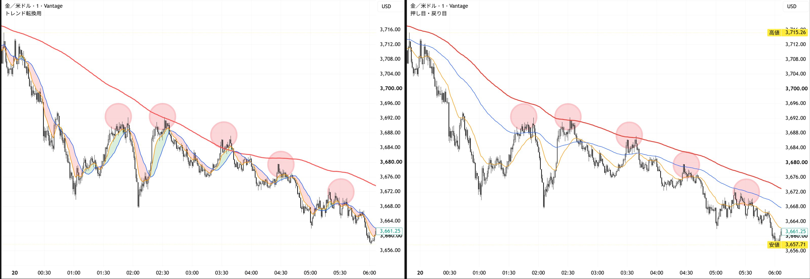
- 図の観察：赤丸の5回とも、200に触れて反転した。
- 図の観察：安値を切り下げながら、下げが続いた。1回の下げは、目測で12〜25ドル。
02:00〜06:00（3,550付近）：100で止まった
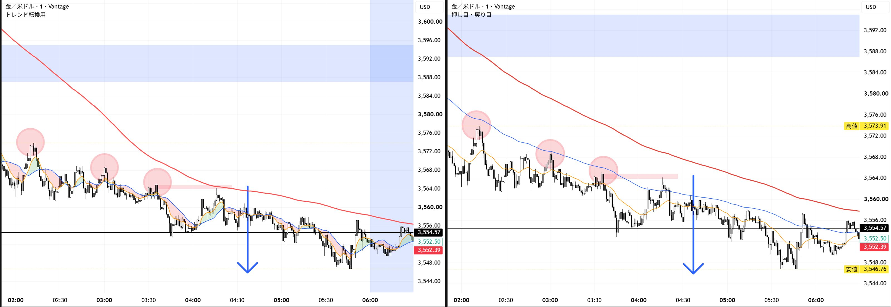
- あなたの言葉：赤丸は100などにも付けている。そういう所は、下落しやすい。
- 図の観察：赤丸は100に付いていて、200までは戻らなかった。
- 図の観察：200はさらに急な下向きで、戻りは100で止まって下げが続いた。
20日23:15〜21日03:15：100で止まった
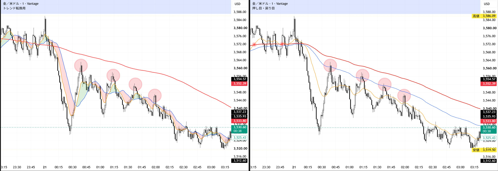
- 図の観察：赤丸4つとも100に付いていて、200までは戻らなかった。
- 図の観察：4回とも戻りは浅く、下げが続いた。
B：200が横〜ゆるい
25・100・200が、同じ高さで束になっているところがあります。
24日20:30〜25日00:30：約40ドル下げた
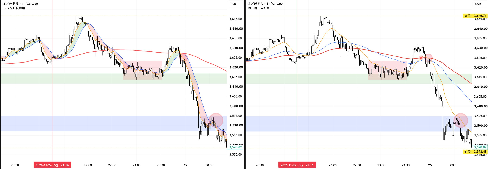
- 図の観察：23:40ごろ、25・100・200が束になったところで触れた。
- 図の観察：そのあと約40ドル下げて、25・100は下に広がった。
02:00〜10:00（3,850付近）：約44ドル下げた
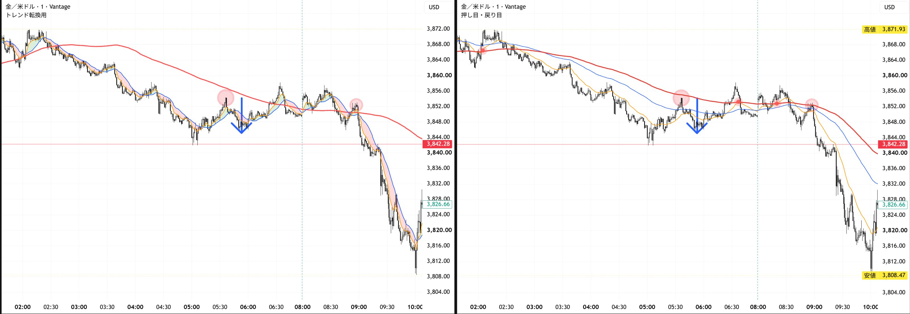
- 図の観察：09:00ごろに200に触れて、約44ドル下げた。
- 図の観察：触れる前は、25・100・200がほぼ束だった。
15:30〜22:30（3,770付近）：3回触れて、結果が分かれた
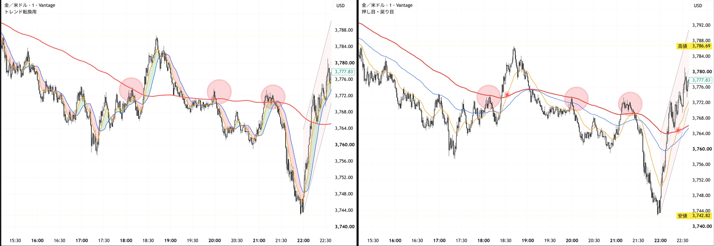
- 図の観察：200は横で、赤丸の3回とも束になったところだった。
- 図の観察：1回目は上に抜けて上昇。2回目と3回目は反転して下げた。3回目のあとは、約29ドル下げた。
19日 01:00〜09:00：約8ドルだけ下げて、上に抜けた
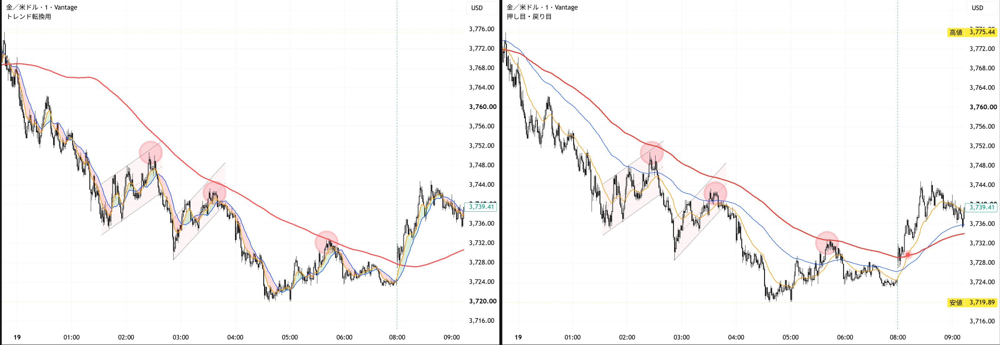
- 図の観察：3つ目の赤丸（05:45ごろ）で200に触れた。
- 図の観察：下げは約8ドルと小さく、08:00に200を上に抜けた。
16:00〜19:45（3,620付近）：触れて上に抜け、束のまま
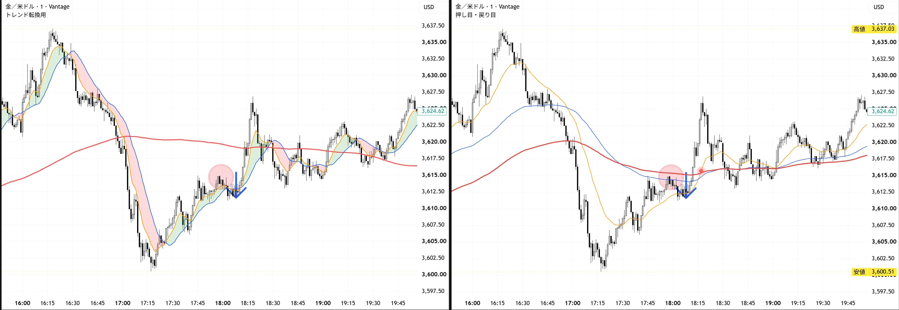
- 図の観察：18:00ごろ触れて、上に抜けた。
- 図の観察：そのあと25・100・200は束のままで、狭い範囲の動きが続いた。
08:15〜18:00（3,730付近）：触れて上に抜け、約4時間横ばい
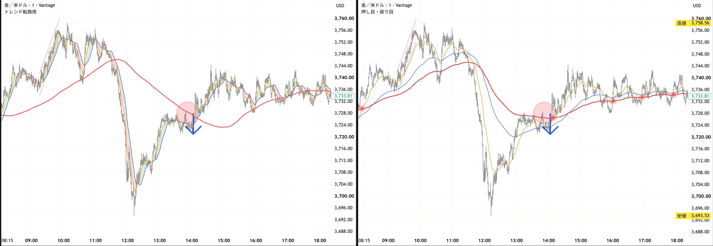
- 図の観察：200が下向きから横に変わるところ（14:00ごろ）で触れて、上に抜けた。
- 図の観察：そのあと25・100・200は束のままで、3,730〜3,745の範囲で、約4時間横ばいが続いた。
11:00〜20:00（3,630付近）：束のまま横ばい
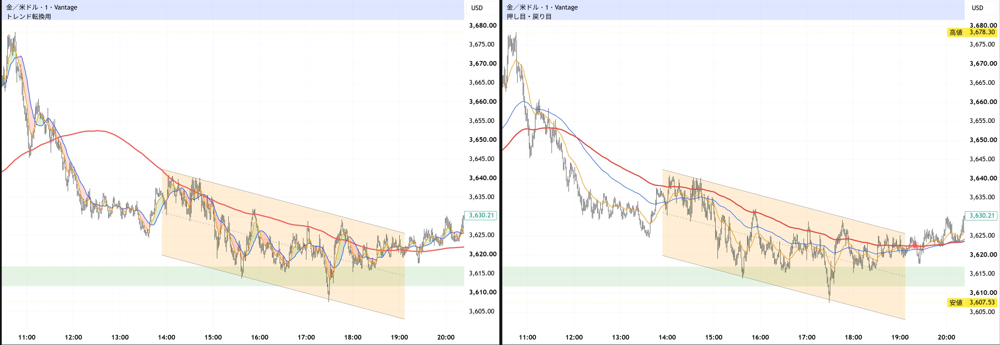
- 図の観察：下向きのチャネルの中で、25・100・200が束になって絡んだ。
- 図の観察：横ばいが続いたあと、19:00ごろから上に出た。
11/25のショート（今回）
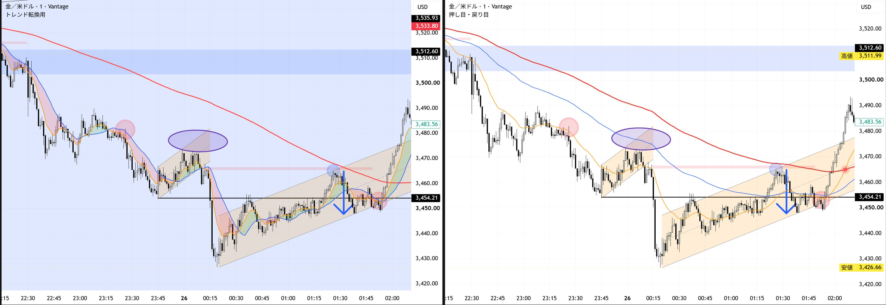
- あなたの言葉：青◎は、戻り高値の抵抗帯が200SMAに当たる付近。ここでショートしていれば、損切りは回避できた。
- あなたの言葉：赤丸は、崩れそうだから入っただけで、崩れてはいなかった。
- 図の観察：青◎のあと、約16ドル下げた。
- 図の観察：赤丸（チャネル下限）のあと、200を上に抜けて上昇した。25・100は束のあと、上に広がった。
- 振り返りノートの「11/25 ショート −$98.60」に、同じ内容があります。